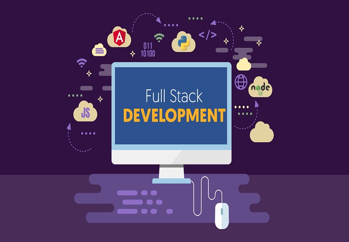

Full Stack Developer
Full-stack developer merupakan kombinasi antara front-end dan back-end developer. Umumnya seorang full-stack developer memiliki tugas dan tanggung jawab yang ganda. Beberapa di antaranya seperti bertanggung jawab dalam aspek server, database, pengalaman pengguna, hosting, dan lain sebagainya. Adapun beberapa keterampilan yang harus dikuasai seperti Java, Node.js, PHP, Phyton, Ruby, UI, UX, HTML, CSS, dan lainnya. Dalam artian, full-stack developer memiliki tugas dan tanggung jawab lebih kompleks serta harus memahami semua level situs dan cara kerja web.
Sumber : https://tekno.kompas.com